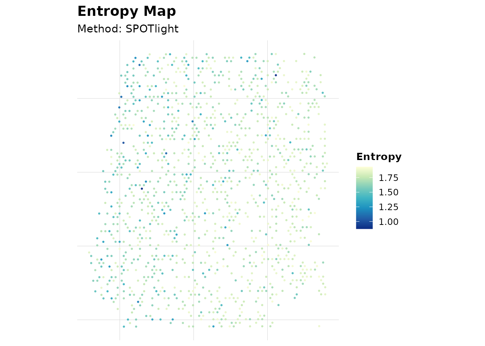

1. Load Example Seurat Object
data("aegis_example", package = "AEGIS")
seu <- aegis_example2. Simulated Workflow (Development Path)
markers <- readRDS(system.file("extdata", "marker_list.rds", package = "AEGIS"))
deconv_sim <- simulate_deconv_results(
seu,
methods = c("RCTD", "SPOTlight", "cell2location"),
seed = 2026
)
#> Loading required namespace: SeuratObject
obj_sim <- run_aegis(seu, deconv = deconv_sim, markers = markers)
knitr::kable(obj_sim$audit$basic$summary)| method | n_spots | n_celltypes | zero_fraction | near_zero_fraction | mean_dominance | mean_entropy | mean_n_detected_types | mean_sum_dev |
|---|---|---|---|---|---|---|---|---|
| RCTD | 1200 | 7 | 0.1015476 | 0.2575000 | 0.3695554 | 1.557445 | 5.197500 | 0 |
| SPOTlight | 1200 | 7 | 0.0410714 | 0.1664286 | 0.3073309 | 1.702981 | 5.835000 | 0 |
| cell2location | 1200 | 7 | 0.0896429 | 0.2244048 | 0.3407826 | 1.617544 | 5.429167 | 0 |
plot_audit(obj_sim, type = "entropy", method = "SPOTlight")
3. Real Import Workflow (P5 Path)
This section mimics exported backend result files and imports them using the new readers.
spots <- colnames(seu)[1:8]
seu_small <- suppressWarnings(seu[, spots])3.1 Build Example Exported Files
tmp_rctd <- tempfile(fileext = ".csv")
utils::write.csv(
data.frame(
barcode = spots,
B_cell = c(0.5, 0.2, 0.4, 0.3, 0.1, 0.2, 0.4, 0.5),
T_cell = c(0.3, 0.6, 0.4, 0.4, 0.7, 0.6, 0.3, 0.3),
Myeloid = c(0.2, 0.2, 0.2, 0.3, 0.2, 0.2, 0.3, 0.2),
check.names = FALSE
),
tmp_rctd,
row.names = FALSE
)
tmp_spotlight <- tempfile(fileext = ".tsv")
utils::write.table(
data.frame(
spot_id = spots,
B_cell = c(0.4, 0.3, 0.5, 0.3, 0.2, 0.3, 0.4, 0.4),
T_cell = c(0.4, 0.5, 0.3, 0.4, 0.6, 0.5, 0.4, 0.3),
Myeloid = c(0.2, 0.2, 0.2, 0.3, 0.2, 0.2, 0.2, 0.3),
sample = "S1",
check.names = FALSE
),
tmp_spotlight,
sep = "\t",
quote = FALSE,
row.names = FALSE
)
tmp_cell2location <- tempfile(fileext = ".csv")
utils::write.csv(
data.frame(
spot = spots,
B_cell = c(15, 8, 12, 10, 5, 7, 9, 11),
T_cell = c(12, 18, 10, 13, 20, 16, 12, 10),
Myeloid = c(5, 6, 4, 8, 5, 7, 6, 9),
x = seq_along(spots),
y = rev(seq_along(spots)),
check.names = FALSE
),
tmp_cell2location,
row.names = FALSE
)3.2 Import and Standardize
rctd <- read_rctd(tmp_rctd)
spotlight <- read_spotlight(tmp_spotlight)
cell2location <- read_cell2location(tmp_cell2location)
#> Warning: cell2location: dropped likely metadata numeric columns: x, y3.3 Build AEGIS Object from Real Inputs
obj_real <- run_aegis(
seu_small,
deconv = list(
RCTD = rctd,
SPOTlight = spotlight,
cell2location = cell2location
),
do_marker = FALSE,
do_spatial = FALSE
)
knitr::kable(obj_real$audit$basic$summary)| method | n_spots | n_celltypes | zero_fraction | near_zero_fraction | mean_dominance | mean_entropy | mean_n_detected_types | mean_sum_dev |
|---|---|---|---|---|---|---|---|---|
| RCTD | 8 | 3 | 0 | 0 | 0.5125000 | 0.9992982 | 3 | 0 |
| SPOTlight | 8 | 3 | 0 | 0 | 0.4625000 | 1.0408587 | 3 | 0 |
| cell2location | 8 | 3 | 0 | 0 | 0.4904068 | 1.0158112 | 3 | 0 |
4. Multi-sample Workflow (P6)
spots_all <- colnames(seu)
n_half <- floor(length(spots_all) / 2)
seu_list <- list(
sample1 = suppressWarnings(seu[, spots_all[seq_len(n_half)]]),
sample2 = suppressWarnings(seu[, spots_all[seq.int(n_half + 1L, length(spots_all))]])
)
deconv_nested <- list(
sample1 = simulate_deconv_results(seu_list$sample1, methods = c("RCTD", "SPOTlight"), seed = 333),
sample2 = simulate_deconv_results(seu_list$sample2, methods = c("RCTD", "SPOTlight"), seed = 444)
)
obj_multi <- run_aegis(
seu_list,
deconv = deconv_nested,
markers = markers
)
sample_summary <- summarize_by_sample(obj_multi)
knitr::kable(sample_summary)| sample_id | n_spots | method | methods_available | mean_dominance | mean_entropy | mean_local_inconsistency | mean_spot_agreement | mean_consensus_confidence |
|---|---|---|---|---|---|---|---|---|
| sample1 | 600 | RCTD | RCTD;SPOTlight | 0.3709512 | 1.553806 | 0.0951720 | 0.9736282 | 0.9631498 |
| sample1 | 600 | SPOTlight | RCTD;SPOTlight | 0.3076496 | 1.707738 | 0.0726369 | 0.9736282 | 0.9631498 |
| sample2 | 600 | RCTD | RCTD;SPOTlight | 0.3767248 | 1.546486 | 0.0933078 | 0.9737247 | 0.9632824 |
| sample2 | 600 | SPOTlight | RCTD;SPOTlight | 0.3146903 | 1.688583 | 0.0737592 | 0.9737247 | 0.9632824 |
render_report_batch(obj_multi, output_dir = "reports")5. Optional Report Generation
render_report(obj_sim, output_file = "aegis_report.html")6. Summary
- Use
simulate_deconv_results()for reproducible demos and method development. - Use
read_rctd(),read_spotlight(),read_cell2location()for external exports. - Use
run_aegis()as the unified pipeline entry for single-sample and multi-sample analysis. - Use
summarize_by_sample()andrender_report_batch()for multi-sample projects.